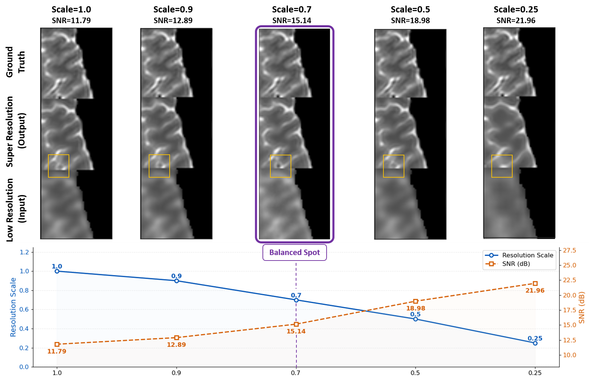
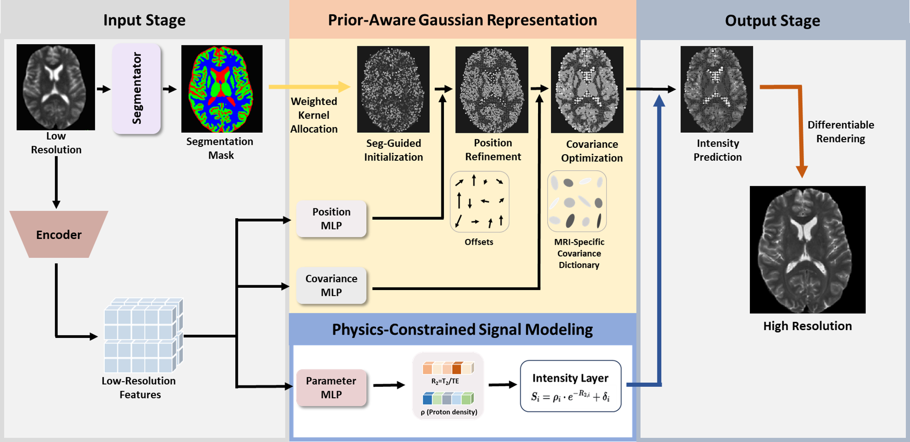
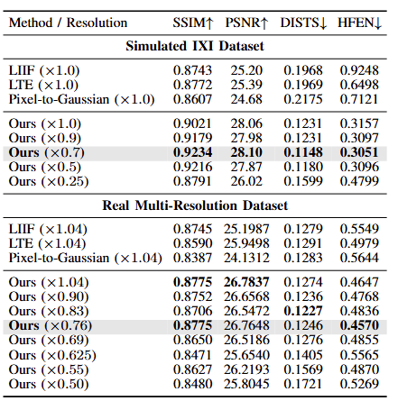
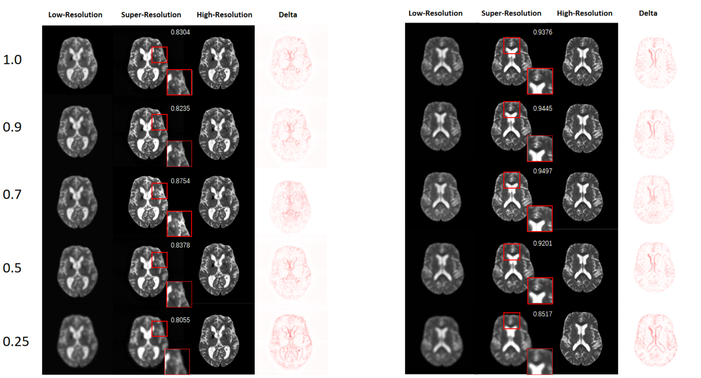

Project Page
STA-MRI: Toward Physics-Aware MRI Image Super-Resolution
Institution Names
Motivation

Figure 1. Motivation for dynamic-resolution MRI super-resolution.
As dictated by MRI acquisition physics [33], [34], under fixed hardware and scan-time constraints, spatial resolution and SNR are fundamentally intertwined: increasing resolution reduces SNR, while improving SNR can come at the cost of spatial resolution. Furthermore, recent studies show that tuning acquisition parameters to achieve an SNR of around 16 dB captures the most structurally informative content. The figure shows that a given low-resolution image may not be the optimal one acquired from the MRI system.
Overview

Figure 2. Overview of the proposed physics-aware 2D Gaussian splatting framework.
An arbitrary-resolution input is processed through two parallel pathways: a segmentator generates tissue masks for segmentation-guided primitive allocation, while an encoder extracts LR features. Two modules subsequently estimate Gaussian parameters: prior-aware representation predicts position offsets and selects covariance matrices from an MRI-specific dictionary, while physics-constrained signal modeling computes intensities from tissue properties (alpha, R2) via MR signal equations. The final high-resolution output is synthesized through differentiable splatting.
Method
Our goal is to achieve dynamic adjustment along the resolution-SNR spectrum, enabling MRI super-resolution at informatively optimal operating points. We propose a physics-aware Gaussian splatting framework that enables continuous-scale MRI super-resolution. Our approach introduces three targeted innovations:
- Prior-aware Gaussian representation that inserts domain-specific priors to guarantee anatomical structural fidelity and clarity.
- Physics-constrained signal modeling that designs a tissue relaxation parameter-based signal equation for biophysically plausible super-resolution.
- Meta-learning-based adaptation that bridges the domain gap between synthetic training and real low-field acquisitions.
Results

Table 1. Quantitative comparison on simulated and real multi-resolution MRI datasets.
As shown in the table, at the x0.7 resolution scale of the simulated dataset, our method achieves a PSNR of 28.10 dB, SSIM of 0.9234, HFEN of 0.3051, and DISTS of 0.1148, representing the best performance among all scales. The finding supports our hypothesis that pursuing the highest input resolution is not always optimal for SR. On the real-world dataset, at x0.76, our method achieves the lowest HFEN (0.4570) and competitive performance across other metrics (SSIM: 0.8775, PSNR: 26.76 dB), indicating superior high-frequency structure recovery. These results strengthen our hypothesis: the optimal resolution for MRI super-resolution is not necessarily the highest achievable resolution.

Figure 3. Visual comparison under different input resolutions.
We validate our proposed Dynamic-Resolution hypothesis. At x1.0, the SR results exhibit amplified noise and artifacts. At x0.25, excessive degradation leads to loss of structural information that cannot be recovered. At the optimal resolution (x0.7), the reconstructions exhibit the sharpest edges and richest structural details most consistent with the ground truth.
Citation
BibTeX information can be added here when available.